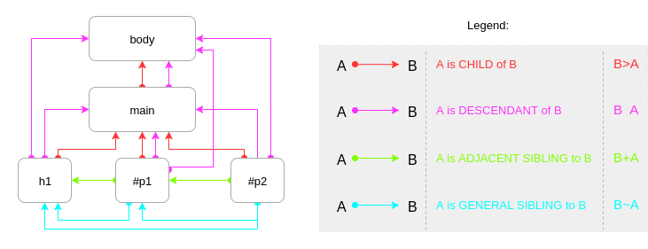

Keyboard shortcuts:
N/СпейсNext Slide
PPrevious Slide
OSlides Overview
ctrl+left clickZoom Element
If you want print version => add '
?print-pdf' at the end of slides URL (remove '#' fragment) and then print.
Like: https://wwwcourses.github.io/...CourseIntro.html?print-pdf
Created for

Iva E. Popova, 2022-2023,

WebCrawling - Overview
WebCrawling - Overview
What is Web Crawling?
- A Web crawler (aka spider, internet bot), is a program that systematically browses the World Wide Web, typically operated by search engines for the purpose of Web indexing (web spidering)
- WebCrawling is a part (subsystem) of WebScraping, Web Data Mining/Extraction software systems.
- Reference:
- Web Crawler @wikipedia
- Web Scraping @wikipedia
How a WebCrawler Works?
- A web crawler starts with a list of URLs to visit, called the seed.
- For each URL, the crawler finds links in the HTML, filters those links based on some criteria and adds the new links to a queue.
- All the HTML or some specific information is extracted to be processed by a different pipeline.
{kind=link}
Popular web crawler use cases
- Search engines (Googlebot, Bingbot, Yandex Bot…) collect all the HTML for a significant part of the Web. This data is indexed to make it searchable.
- SEO analytics tools on top of collecting the HTML also collect metadata like the response time, response status to detect broken pages and the links between different domains to collect backlinks.
- Price monitoring tools crawl e-commerce websites to find product pages and extract metadata, notably the price. Product pages are then periodically revisited.
- Social Network data extraction, Sentiment Analyses, ...
Web Crawling Legal/Ethical Concerns
- Crawlers consume resources on visited systems and often visit sites without approval.
- Issues of schedule, load, and "politeness" come into play when large collections of pages are accessed.
- Mechanisms exist for public sites not wishing to be crawled to make this known to the crawling agent. For example, including a
robots.txtfile can request bots to index only parts of a website, or nothing at all.
robots.txt - example
# The user agent named Googlebot is not allowed to crawl any URL that starts with http://example.com/search/.
User-agent: Googlebot
Disallow: /search/
# All other user agents are allowed to crawl the entire site.
User-agent: *
Allow: /
- Reference: robots.txt syntax
Web Crawling with Python
Web Crawling with Python
The Process
- Visual inspection: Figure out what to extract
- Tools: Browser's Dev Tools, like Chrome DevTools
- Make an HTTP request to the webpage and parse it
- Tools: python library like: Requests, urllib
- Parse the HTML to get the relevant data
- beautifulsoup4
Using Chrome DevTools to inspect a WebPage
HTML overview and syntax
HTML overview and syntax
What is HTML?
- HTML stands for Hyper Text Markup Language
- HTML consists of a series of elements
- HTML elements describes the structure and content of a Web page
- HTML elements are styled with CSS
- HTML elements can be dynamically manipulated with JavaScript
- An HTML document consists of HTML elements!
- Each element has:
<opening tag> content </closing tag>- The content can be text, or another HTML element
- Some HTML elements are empty - they have no content, and according to HTML5 - no closing tag. For example:
<img src="images/cats.png">
Examples
<h1>Hello World</h1>
<h1>Hello <em>World</em></h1>
<h1 class="primary">Hello World</h1>
<h1 class="primary" id="first">Hello World</h1>
HTML document structure
- Each HTML document must follow next structure:
<!DOCTYPE html>
<html>
<head>
...
</head>
<body>
...
</body>
</html>
Basic HTML Elements
div and span elements
divdefines a document section (block) and is used as a container for other elements.spanis an inline element used as container for text or other inline elements
Хипервръзки
HTML елемент a (anchor)
<a href="URL">content</a>
- URL – идентификатор на ресурс в WWW или на локален файл. Задължителен атрибут!
- content – това, което ще се изобрази в страницата като линк. Може да бъде текст, изображение или друг HTML елемент.
- Ако пропуснете content, то браузърът няма да изобрази линка!
- Браузърите слагат дефоултен CSS за посетени/непосетени линкове. Детайлното им оформление ще разгледаме в частта за CSS.
Атрибут target
<a href="URL" target="_blank">content</a>
- Атрибута
targetзадава къде да се отвори ресурсът към който сочи линка. - Стойности:
_self: това е дефоултната стойност. Ресурсът ще се отвори в текущия таб/прозорец._blank: ресурсът ще се отвори в нов таб/прозрец на браузераframe_id: ресурсът ще се отвори в зададения фрейм. Ще разгледаме по-подробно в темата за iframes.
Атрибут title
<a href="URL" title="more info">content</a>
titleе глобален атрибут, който често се употребява при хипер-линкове.- В него можем да зададем допълнителна информация, която ще се изобрази като tooltip, когато мишката е върху елемента.
- Позиционирайте мишката върху долния линк, и вижте какво прави атрибута
title - what is tooltip
Повече за HTML hyperlinks
- Общо описание за употребата на хипер-линкове в HTML: HTML Links@w3schools
- Сбит справочник за HTML a елемента: HTML <a> Tag@w3schools
HTML lists
Unordered lists (UL)
- 2 бр. яйца
- 1 ч.ч. прясно мляко или вода
- 1 ч.ч. брашно тип 500
- 1 с.л. краве масло
- Щипка сол, щипка захар
- An
ULelement could contain onlyLIelements! - A
LIelement could contains any HTML elements
Ordered lists (OL)
- Яйцата се разбиват, докато се получи еднородна смес.
- Добавя се млякото, щипка сол и щипка захар.
- На малки порции се добавя пресятото брашно.
- Разбъркваме до получаването на гъста смес,
с консистенция подобна на боза.
- Намазваме с масло предварително нагрятия тиган
и поставяме черпак от сместа.
- След няколко минути обръщаме палачинката.
- An
OLelement could contain onlyLIelements! - A
LIelement could contains any HTML elements
HTML Tables
Основни елементи
Пример:

<table border="1">
<tr>
<td>Едно</td>
<td>Две</td>
</tr>
<tr>
<td> Три </td>
<td> Четири </td>
</tr>
</table>
CSS правила - синтаксис
Общ синтаксис на едно CSS правило:
selector {
property1: value1;
property2: value2;
...
}
Пример:
h1{
background-color: red;
color: white;
}
Общ синтаксис на едно CSS правило:

Селекторите могат да се групират - отделят се със запетайка
h2,h4 {
color: white;
}
Декларациите също могат да се групират – отделят се с точка и запетая ‘ ; ’
h4 {
background-color: red;
color: white;
border: 5px solid gray;
}
' ; ' след последна декларация не е задължителна, но е добра практика да се поставя винаги – улеснява редактирането на кода.
Коментари в CSS
/*- за начало на коментар*/- за край на коментар
Пример:
/*~~~~~~~~~~~~~~~~~~~~~~~~~~~~~~~~~~~~
Пример за многоредов коментар
~~~~~~~~~~~~~~~~~~~~~~~~~~~~~~~~~~~~~*/
/*Main_Sections_Title*/
section>h2{
font-size: 1em;
-webkit-border-radius: 12px; /* Safari 3-4 */
-moz-border-radius: 12px; /* Firefox 3.6 and below */
border-radius: 12px; /* modern browsers */
/*background: red;*/
}
Какво са CSS селекторите?
- Шаблони, които определят над кои HTML елементи ще се приложи зададеният стил в декларациите.
- Могат да бъдат съвсем прости, като '
*' или 'p' или доста по-сложни като:a[href^="https://"]:hover
Списък със всички дефинирани в стандарта (CSS1 – CSS3) селектори: css_selectors
В момента се разработва спецификацията
CSS Selectors Level 4
Селектори за елементи
Element (type) selectors
/* Всички параграфи в документа ще бъдат с червен шрифт */
p {
color: red;
}
Действие: селектира всички HTML елементи от дадения тип.
Универсален селектор (Universal selector)
* {
marging: 0;
padding: 0
}
Действие: селектира всички HTML елементи в документа.
Не се препоръчва да се използва, тъй като забавя обработката на страницата.
Селектори за class и id
HTML атрибути: class и id
- class - можем да зададем един и същи клас на множество елементи в HTML. Така лесно можем да селектираме всички тях.
- id - само един елемент в документа може да има дадено id. T.e. чрез id селектираме само един елемент.
Параграф 1
Параграф 2
Параграф 3
Параграф 4
Параграф 5
Стойности за class и id
- Стойностите на атрибутите class и id са по избор на програмиста, но задължително започват с буква, след която може да има произволна съвкупност от букви, цифри, '_' и '-'.
- Можем да зададем няколко класа за един елемент, като ги разделяме със спейс.
- В атрибута id не можем да имаме спейс!
Параграф 3
Селектор за class
- Записва се с точка (".") последвана от стойност на class.
- Може да бъде специфициран допълнително, като пред него непосредствено се запише тип на елемент.
/* Селектира всички HTML елементи, които са дефинирали class="blue" */
.blue{
color: blue;
}
/* Селектира всички HTML елементи, от тип 'p', които са дефинирали class="red" */
p.red{
color: red;
}
Селектор за id
- Записва се с диез (хаш таг) - "#", последван от стойност на атрибута id.
- Тъй като с дадено id можем да обозначим само един единствен елемент от цялото HTML дърво, то е безсмислен записът с тип на елемент отпред.
- Например:
p#vip{...}няма смисъл и не се препоръчва да се използва.
/* Селектира елементът с id="main_title" */
#main_title{
color: red;
}
Пример
/* Селектира всички HTML елементи, които са дефинирали class="c1" */
.c1{
color: purple;
}
/* Селектира всички H1 елементи, които са дефинирали class="c1" */
h1.c1{
font-style: italic;
}
/* Селектор по id */
#vip{
color: #aa3333;
font-size: 2em;
text-shadow:
2px 2px #a000a0,
2px 2px #c000c0;
}
Purple Section:
Заглавие
Параграф
Под заглавие
Параграф
Параграф с id="vip"
CSS Комбинатори (CSS Combinators)
Чрез комбинаторите съставяме селектори, които отчитат позицията (контекста) на елементите в HTML дървото.
Видове HTML възли
- Родител (Parent)
- Дете (Child)
- Наследници (Descendants)
- Братя (Siblings)
Селекторите, чрез които можем да избираме елементи според позицията им в HTML дървото се образуват чрез комбинатори:
Комбинаторите, са символи, чрез които се задава връзка между селектори и така чрез тях се образува съставен селектор.
selector1<combinator>selector2
| Комбинатор | Селектор |
|---|---|
| ' ' (спейс) | parentSelector descendantsSelector |
| '>' | parentSelector > childrenSelector |
| '~' | previousSelector~generalSiblingSelector |
| '+' | previousSelector+adjacentSiblingSelector |
Видове HTML възли и съответстващи комбинатори - Диаграма
{kind=link}
Пример: CSS Combinators
See the Pen CSS Selectrors - Combinators on CodePen.
Пример: CSS Combinators
See the Pen Combinators Siblings - demo by Iva Popova (@webdesigncourse) on CodePen.
Пример: CSS Combinators
See the Pen Task: ComplexCombinators by Iva Popova (@webdesigncourse) on CodePen.